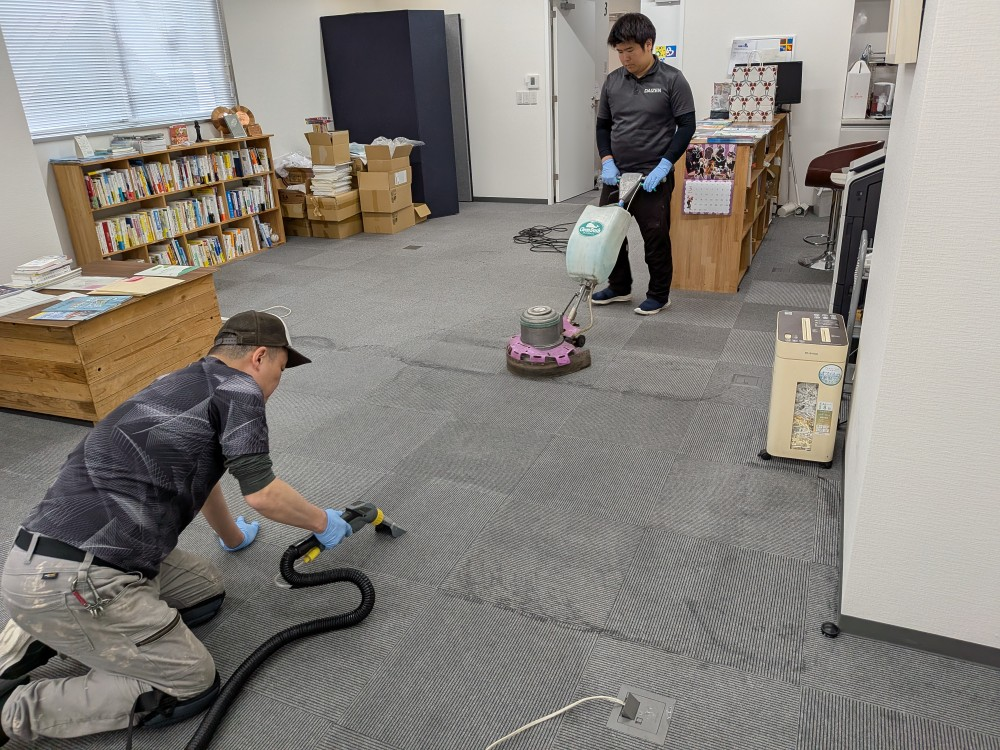
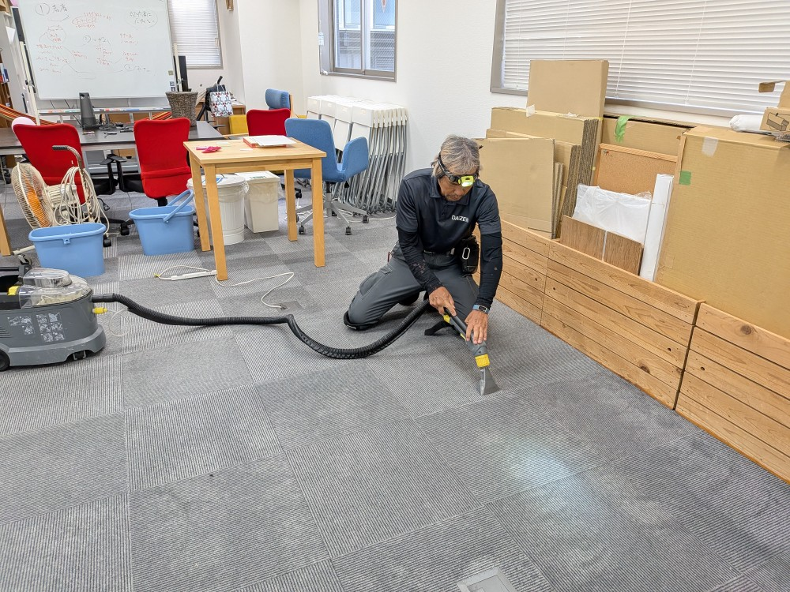
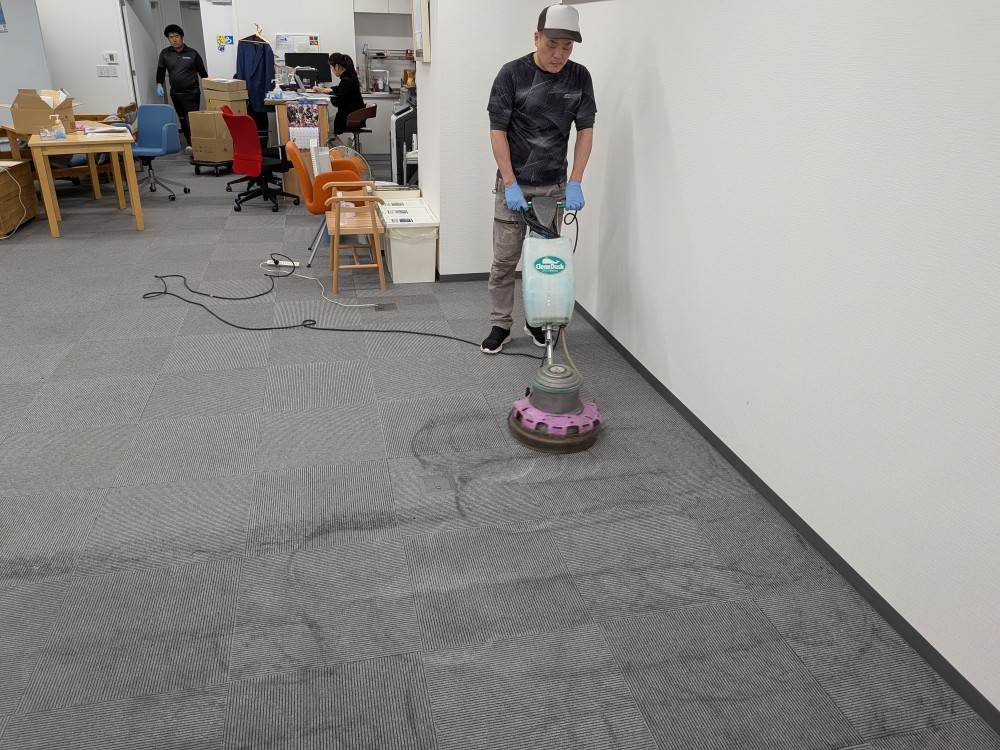
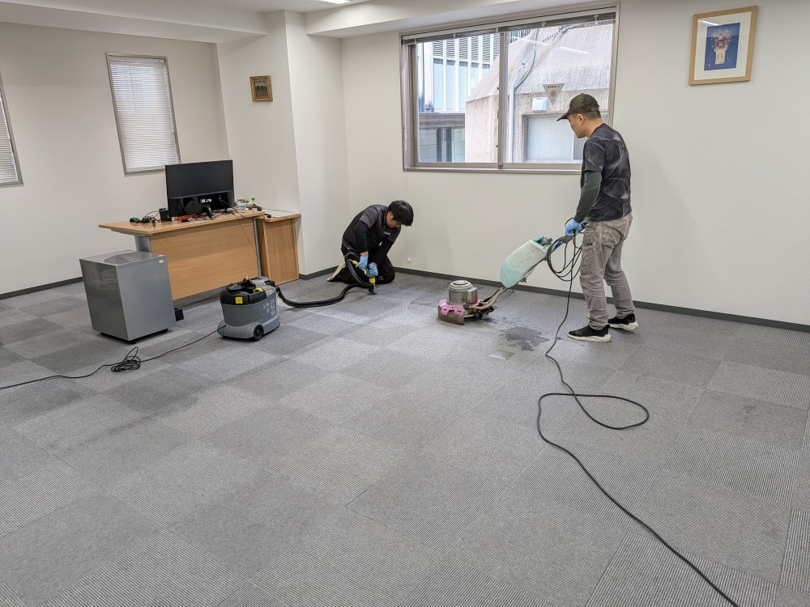
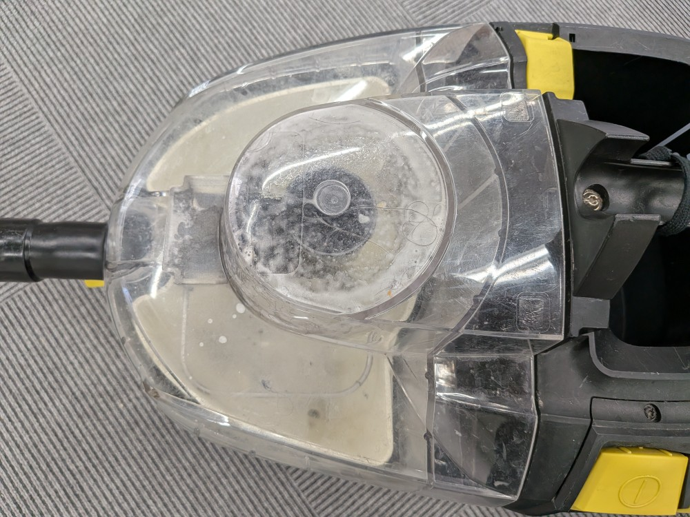
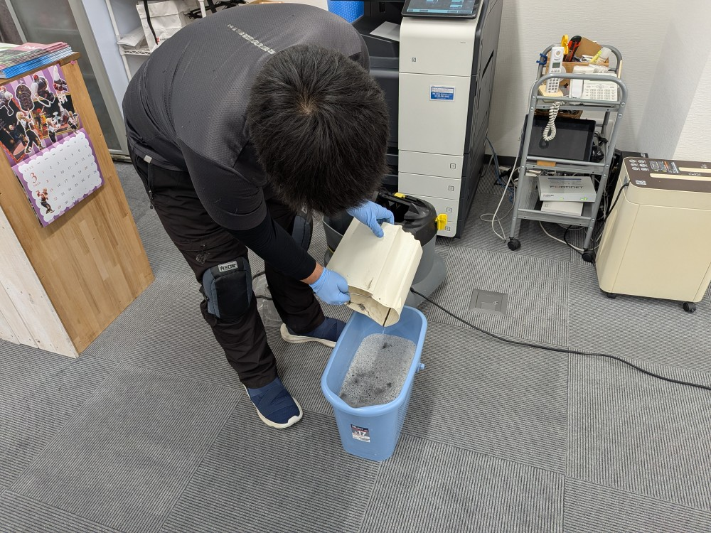
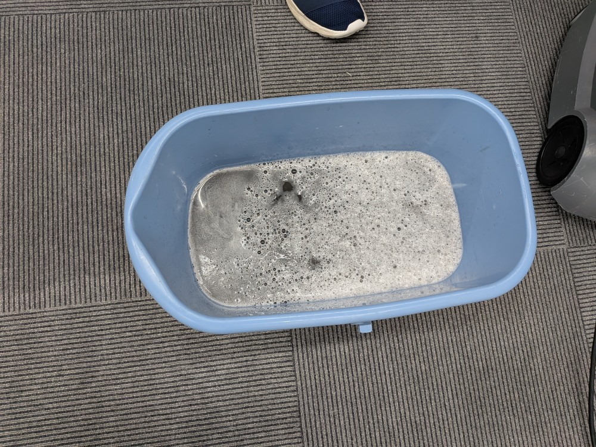
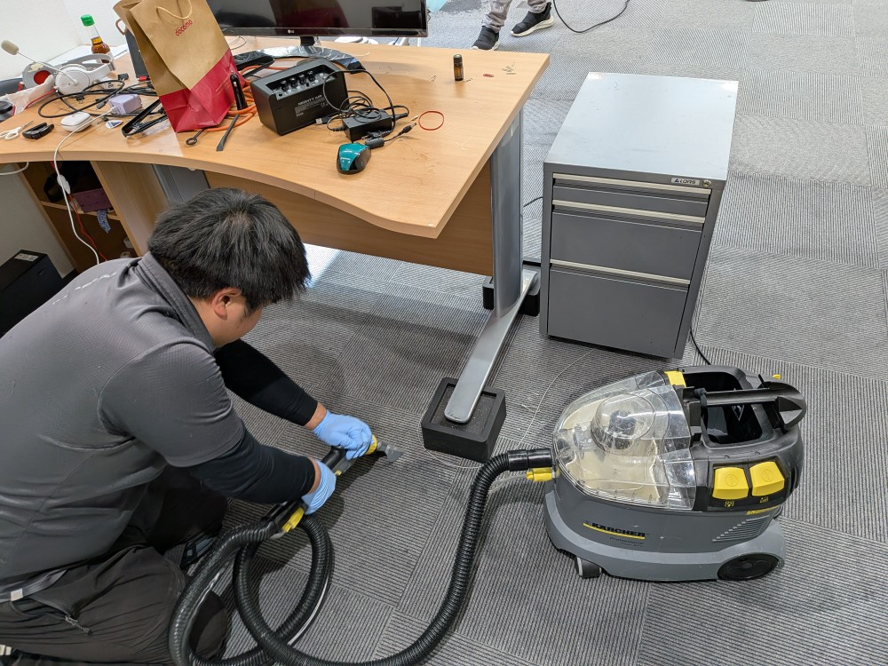
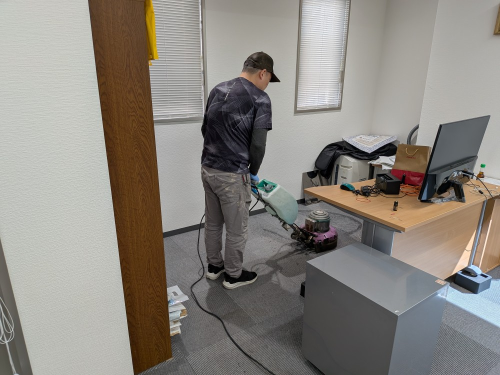

東京都日本橋のリピーターＹオフィス様のカーペットクリーニングを実施しました！

日本橋のリピーターＹオフィス様の今年のカーペットクリーニングを実施しました！毎年Ｙオフィス様では従業員さんが増えておりまして、必然的に堆積汚れも増えてきてしまい、カーペット洗浄クリーニングをすると真っ黒な汚水がごっそり採取されました！DAIZENプロフェッショナルメソッドのカーペットクリーニングは、ドイツ製カーペット専用リンサー洗浄機器・ドイツ製カーペット専用除菌消臭洗浄薬剤を用いて、カーペット内部の汚れを薬剤カプセルに閉じ込めて、根こそぎバキューム吸引してカーペット汚れを徹底的に除去していきます。クリーニング後は、見違えるほど、すっきり綺麗になりました！







